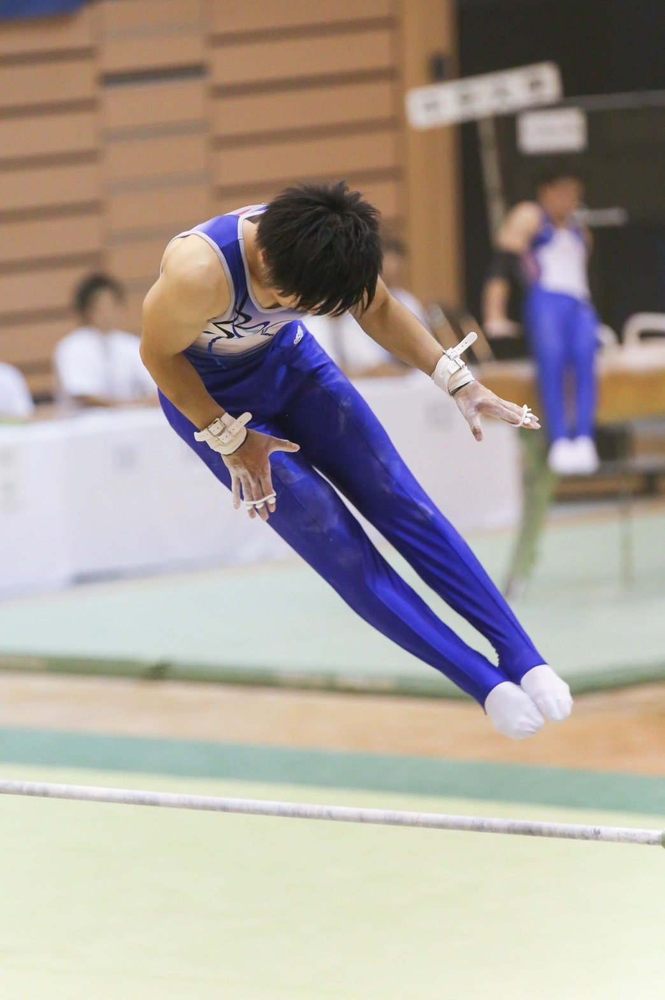
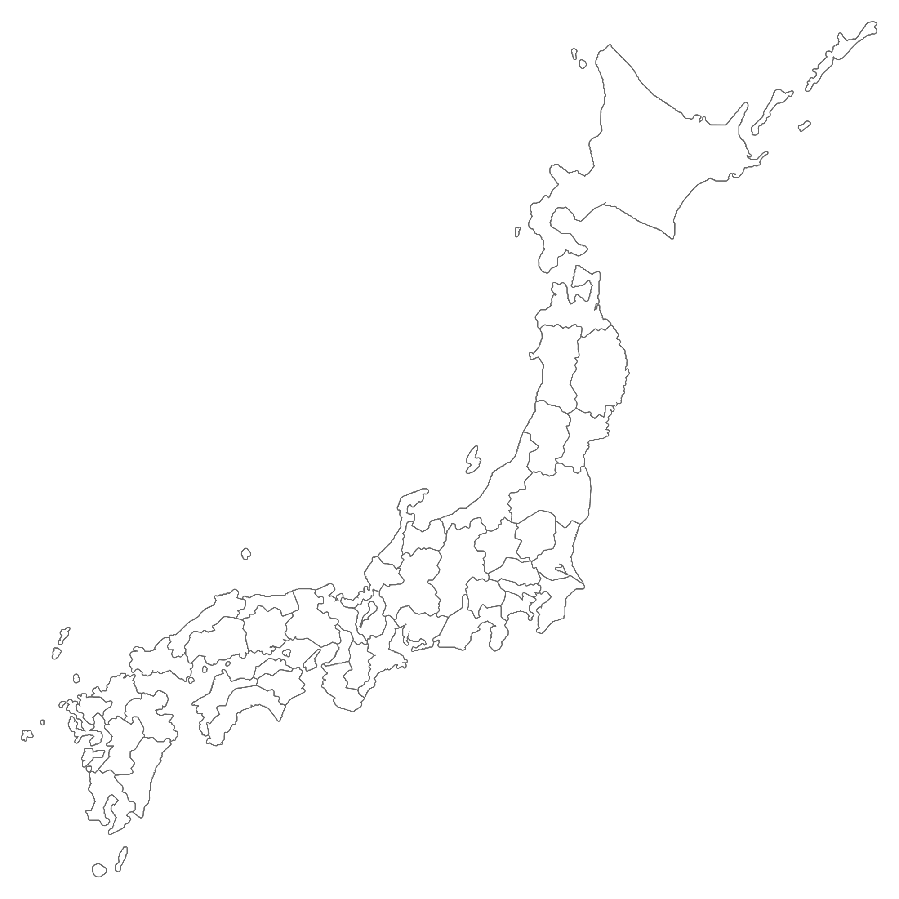
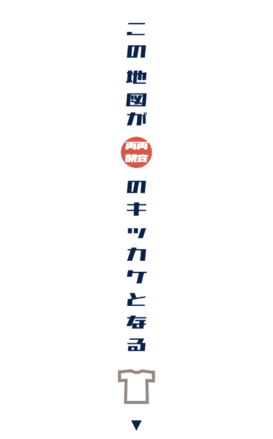
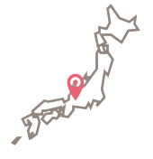
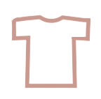
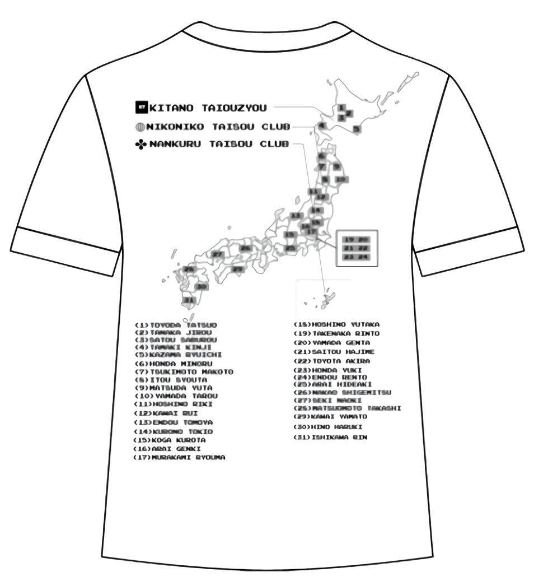
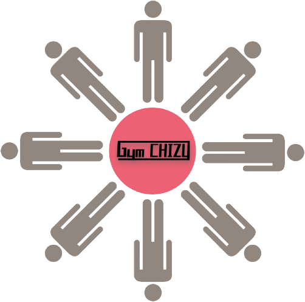

 
意思ある体操人を
つなぐ地図
体操人
の
名前
を
地図
に示し
Tシャツ
にプリントします
01
Your NAME
期間中にご支援いただいた体操人である
皆さんの名前と簡略な所在地を地図に示します。
某ゲームの分布図みたいな感じです。

02
Printed T-shirt
他の体操人との繋がりをイメージ
一体感を持ってもらいたいという想いから
出力媒体にはTシャツを選びました。

03
Gymnast CHIZU
全国の意志ある体操人が記された地図の完成です。
再会・再開のキッカケとなることを願っています。
04
Design
Tシャツ背面にGymCHIZUをプリント
名前＋所在地を記載し
チズ上にナンバーで記します。
Tシャツオモテ面、左胸部に
GymCHIZUロゴをプリント

04
つのキッカケづくり
体操人
をつなぐ
キッカケ
をつくる
体操は競技運動が極めて難しく、
生涯に渡って競技を続けていくことの
ハードルが高いスポーツです。
その特殊性故に “未経験者が体操をやってみる” ことは
年齢を重ねるごとに難しくなります。
体操未経験者が大学卒業後に競技としての
体操を始める例はほとんどありません。

競技の
発展
= 競技人口の
増加
競技発展のためには若い年齢から
体操に取り組む層の増加を計ることはもちろんですが、
引退年齢を緩やかにし、
シニア層・マスターズ層の競技人口を
増やすこともポイントです。
全ては
体操
の
発展
のために
見つけるキッカケ
思い出すキッカケ
つながるキッカケ
応援するキッカケ
このPROJECTが再会と再開のキッカケとなり
体操の更なる発展のキッカケとなることを願っています
クラウドファンディング
PAGEへGO